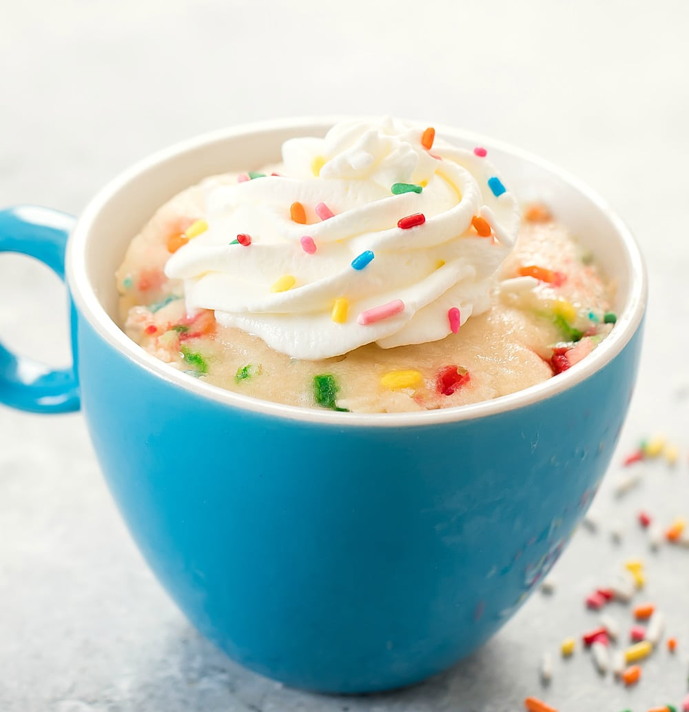

Mug Cake

Description
An easy microwave Vanilla birthday Mug Cake that’s the fastest way to make dessert for one or two. Enjoy it plain, add whipped cream, or a scoop of ice cream and you’re on your way to dessert bliss.
Ingredients
- 1/4 cup all-purpose flour
- 2 tbs sugar
- 1/4 tsp baking powder
- dash salt
- 2 tbsbutter. melted
- 3 tbs milk
- 1/3 tsp vanilla
- 1 tsp sprinkles
Steps
- Add flour, sugar, baking powder, and salt to a mug and stir together.
-
Stir in milk, melted butter, and vanilla extract until smooth, being sure to scrape the bottom of the mug. Stir in sprinkles.
- Cook in microwave for 70-90 seconds* (until cake is just set, but still barely shiny on top). Allow to rest in microwave for 1 minute before consuming